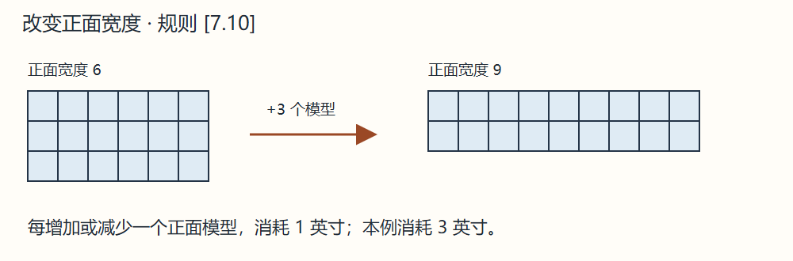

[7.10] 调整正面 Changing Frontage
密集、疏开和乌合队形有正面宽度，即最前排模型数；散兵没有正面宽度。
可把后排模型调到前排，或把前排调回后排；每增减一个正面模型消耗 1 英寸。乌合之众只能在损失后补位，不能主动扩张或收缩正面。同一移动阶段不能既扩张又收缩，也不能借调整正面与敌部队接触。


上一节：[7.9] 改变方向 Changing Direction
下一节：[7.11] 包抄移动 Wrap-Around Movement
密集、疏开和乌合队形有正面宽度，即最前排模型数；散兵没有正面宽度。
可把后排模型调到前排，或把前排调回后排；每增减一个正面模型消耗 1 英寸。乌合之众只能在损失后补位，不能主动扩张或收缩正面。同一移动阶段不能既扩张又收缩，也不能借调整正面与敌部队接触。

上一节：[7.9] 改变方向 Changing Direction
下一节：[7.11] 包抄移动 Wrap-Around Movement